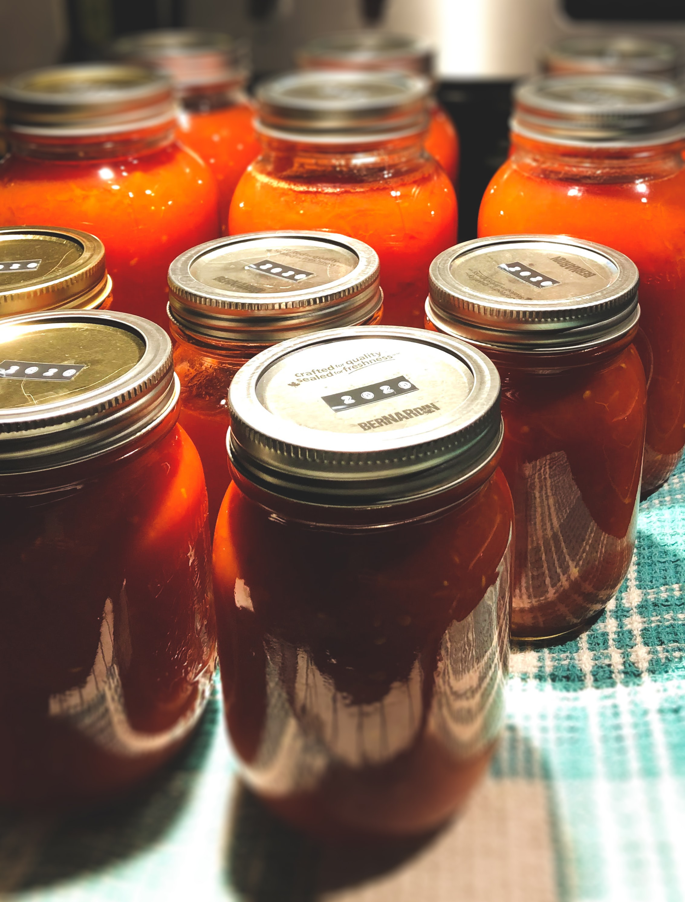

Red Sauce

Description
A delicious tomato sauce is the foundation of so many beloved Italian-American recipes.
Whether served with tender, perfectly seasoned meatballs, ladled across each layer of a lasagna,
spooned over a portion of chicken Parmesan before it's finished under the broiler,
or simply tossed with your favorite pasta shape and topped with freshly grated cheese,
a killer red sauce is the workhorse of any respectable Italian-American kitchen.
The components of this red sauce, which is based on Marcella Hazan's famous recipe for ragù alla bolognese but is somewhat saucier,
might appear simple, but it is of utmost important that all your ingredients be as fresh and vibrant as possible.
Use only the best vegetables and meat you can find, and you will be rewarded with a sauce so deeply flavorful
that even Nonna would be proud.
Ingredients
- 1 tbsp neutral oil
- 3 tbsp unsalted butter
- 1/2 cup yellow onion, finely diced
- 1/2 cup celery, finely diced
- 1/2 cup carrot, finely diced
- 1/2 lb ground beef
- 1 cup dry white wine
- 3 tbsp crème fraîche, plus 1 cup water
- 2 1/2 canned tomatoes with their juice, or 2 cups imported Italian passata di pomodoro (tomato purée)
- Salt
- Pepper
Steps
Note: For a vegetarian version of this recipe, simply omit the beef (if you're serving the sauce with meatballs, this might be the move).
To make it vegan, ditch the butter and crème fraîche liquid as well; you can use 3 tbsp olive oil and 1 cup vegetable stock in their place, respectively.
- Add the oil and butter to a heavy-bottomed pot or Dutch oven set over medium heat.
- Add the vegetables to the melted fat along with a pinch of salt and cook until softened, stirring very often to ensure they do not brown.
- Once the vegetables are fully cooked, add the ground beef and another pinch of salt.
- Turn up the heat to medium high and cook the meat, stirring very often and crumbling it with the back of a wooden spoon, just until it has lost its red color.
- Whisk together the crème fraîche and water to get a smooth, milky liquid.
- Once the beef is fully cooked, reduce the heat to medium and add the crème fraîche liquid to the pot.
Cook, stirring constantly, until the liquid has fully reduced and been absorbed by the meat.
- Add the white wine and again allow the liquid to fully reduce while stirring frequently.
- Once the wine has cooked off, add a grating of fresh nutmeg (about 1/8 tsp; several strokes across a Microplane-style grater should suffice).
- Add the tomato, a healthy pinch of salt, and several grindings of black pepper, stir, and turn the heat back up to medium-high.
- Allow the sauce to come up to a full, steady simmer, then reduce the heat to low, keeping it at the barest of simmers.
- Simmer the sauce for a minimum of one hour, and up to three hours, stirring and tasting frequently. Keep adding salt until your mouth waters.
- When you're satisfied with the flavor, serve the sauce immediately with your favorite pasta shape (cooked al dente and topped with freshly grated Parmesan cheese, of course),
or cool and store in the refrigerator for up to a week. This sauce also freezes quite well!
Click here to return home.